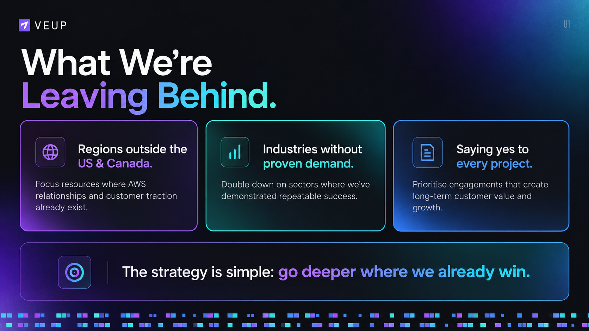
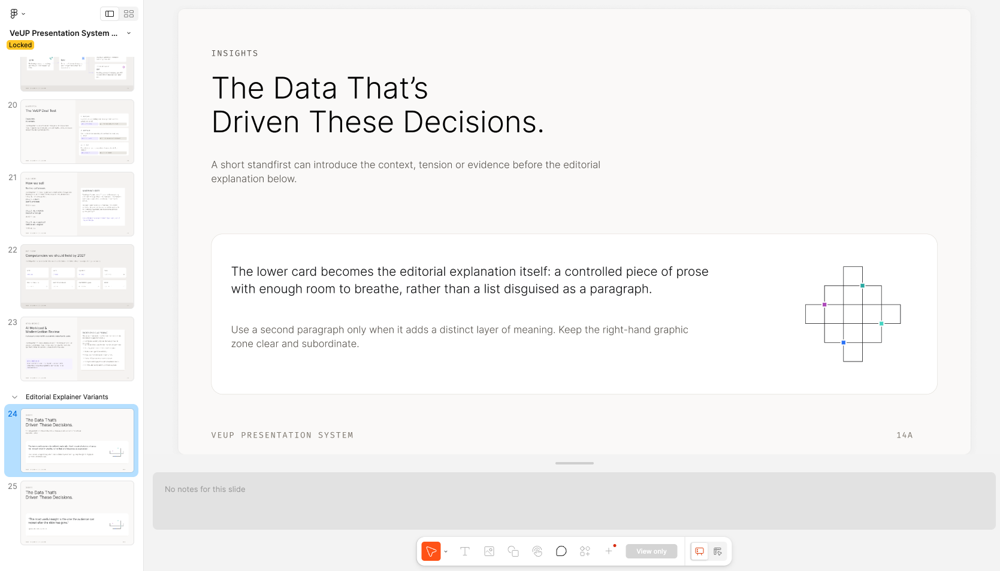
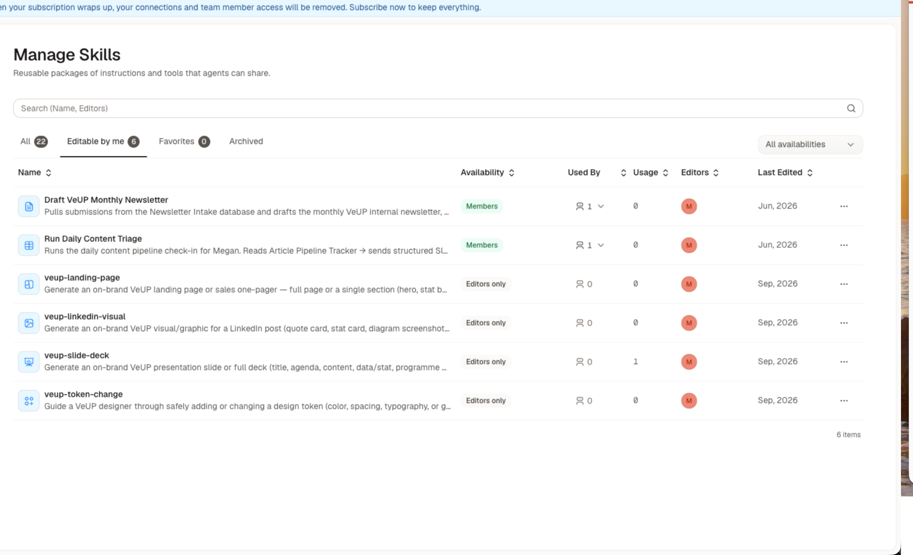
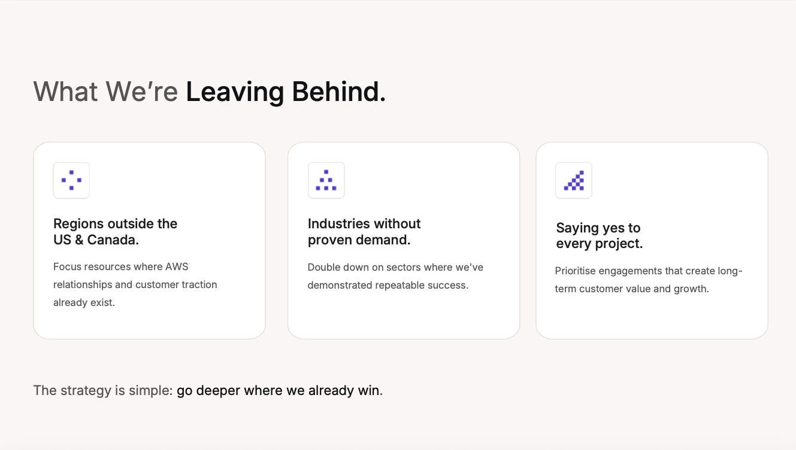
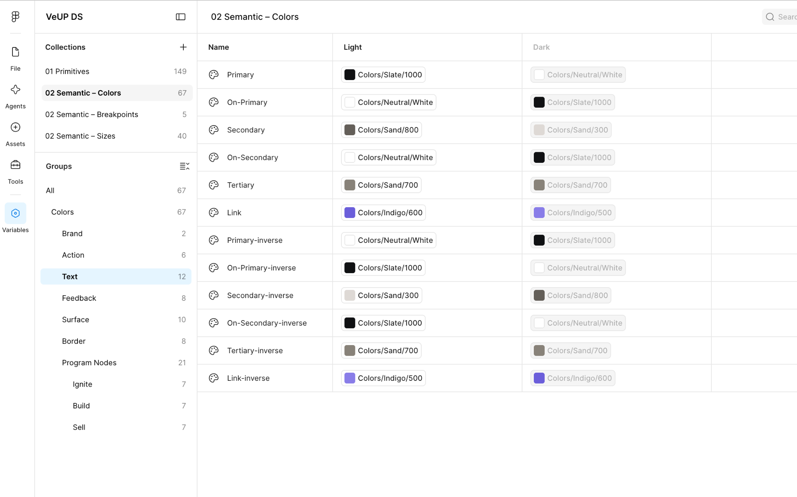
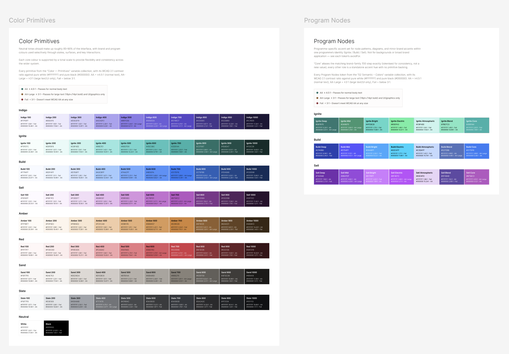
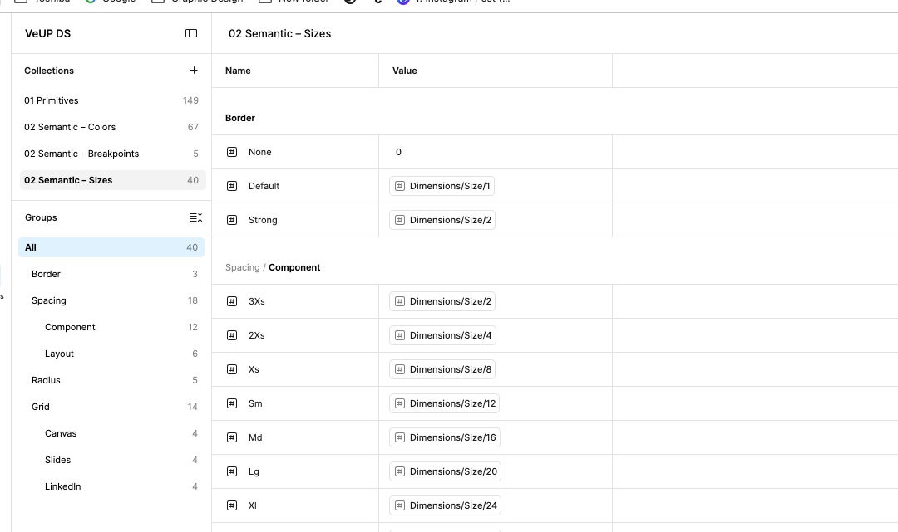
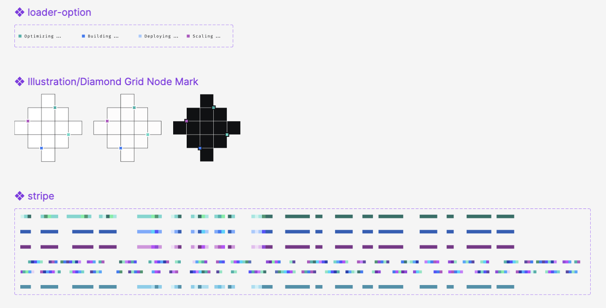

Brand ingredients without the full design logic.

Unapproved colour treatment
Altered, AI-invented logo mark
Glow and gradient effects outside the approved visual language
Layout logic reinterpreted rather than followed
A brand is more than its logo, colours and typeface. A proper design system also defines the grids, spacing, hierarchy, components, behaviours and rules that make those ingredients work together.
Most of that system is designed to be interpreted visually by people, not structured for AI to use. Give AI a brand-guidelines PDF and it may recognise the visual identity, but it does not automatically receive the rules, relationships and constraints needed to design reliably with it.
At a glance
Strategic contribution
Built and tested in real workflows; broader rollout was interrupted by VeUP’s closure. Machine-readable design documentation and output-specific Skills worked alongside Figma as a visual reference, with human review retained.
Testing showed freelance design spend fall from approximately $5,000 to $800 per month (84%) and weekly creative cleanup from approximately 15 to 3 hours (80%). These were achieved testing results, not evidence of a completed company-wide rollout.
Based on testing, I projected that the remaining freelance spend could reach $0 within a further three months. The broader rollout was interrupted, so this projection was not realised or verified.


VeUP had one in-house designer: me, and design was only part of my remit. As demand grew, generative AI offered an obvious shortcut: why wait in the creative queue when you could make the asset yourself?
The shortcut looked more convincing than it was. AI could reproduce the logo, colours and typography while improvising the decisions around hierarchy, composition, spacing, components and format.
Some of that work reached customers without creative review. Instead of creating capacity, it created creative debt: time that should have gone into design was spent finding, correcting or rebuilding work already in the world. AI removed the wait for production, not the need for design judgement.


The answer was not tighter policing or better prompts. The underlying design knowledge needed to exist in a form AI could use.
Designers infer relationships between tokens, components, layouts and hierarchy from the visual system. AI needs those relationships made explicit. The visual system did not need replacing; it needed a machine-readable counterpart.
I translated VeUP’s visual system into structured documentation covering tokens, semantic roles, typography, spacing, grids, components, behaviours, exceptions and governance.
Figma remained the visual reference for designers; the structured documentation exposed the same logic to AI. One design system, two ways to read it.
Colour ramps, type scale, spacing, size, radius and breakpoints.
Text, surfaces, actions, borders, programme accents and feedback states.
Reusable patterns that inherit the system rather than hardcoding decisions.
Presentation, landing page, one-pager and social formats.




Knowing the core brand system still does not tell AI how to build a strong presentation, one-pager or landing page. Each format adds its own layout, density and behaviour rules.
The core system stayed shared. What changed was the additional context each medium needed, so AI could make decisions appropriate to the job instead of falling back on generic design patterns.
The value was not simply better AI output. It was changing the economics of creative production.
Repeatable work moved into a governed system, reducing external design dependency and cleanup while shifting senior creative time toward direction, review and improving the system itself.
Time comparison uses the same weekly period, comparable asset volume and complexity, and the same tracking rules. Before includes AI-made work outside the governed system; after includes AI-created work within it.
I defined the design-system architecture, translated visual judgement into machine-readable rules, created output-specific systems and AI Skills, and designed the governance that kept human- and machine-created work aligned.
The work moved creative expertise out of repeated manual correction and into reusable systems that improved quality, capacity and commercial efficiency.